| SOURCE | TITLE| IMAGE MATCH | click to source page |
| eBay | 1952 China Asian Pacific Peace Conference Stamp #348st | eBay | 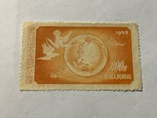 |
| eBay | People's Republic of China Scott #169 Mint No Gum As Issued | eBay | 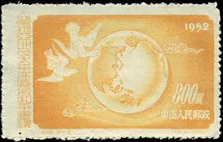 |
| Find Your Stamps Value | Peace Conference of the Asian and Pacific Regions: Doves and Globe - 庆祝亚洲及太平洋区域和平会议: 鸽子和地球$800 Brown orange stamp price, value |  |
| eBay | CHINA LOT OF 2 STAMPS ( SOUV D4 ) BB 11 | eBay | 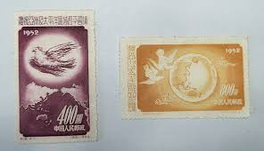 |
| Etsy | Set of 4 1952 China Stamps | - Etsy | 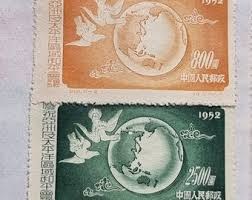 |
| HipStamp | China Stamp:1952 SC# 170-Peace Dove Over Pacific-Cto Stamp-Like Mint | Asia - China, General Issue Stamp / HipStamp | 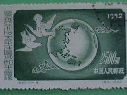 |
| Shutterstock | Beijing China May 7 2025 Old Stock Photo 2628587955 | Shutterstock | 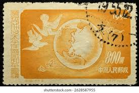 |
| Etsy | Set of 4 1952 China Stamps | - Etsy UK | 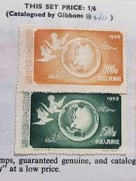 |
| eBay | China PRC 1952, C18, Sc. 167-170, Mi. 192-195, MINT, MNH, 6 complete set NGAI | eBay | 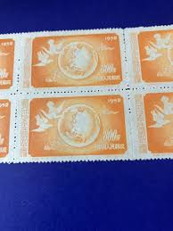 |
| Amazon.com | Amazon.com: Prophila Collection People's Republic of China 192-195 (Complete.Issue.) unused 1952 Peace (Stamps for Collectors) Birds : Toys & Games | 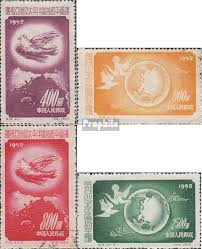 |
| eBay | Ryukyu Islands - 1960 - 3 Cents Reddish Brown Little Egret & Rising Sun #74 F-VF | eBay |  |
| eBay | CHINA Happiness & Prosperity 1992 Yuan Coin,1994 Token(Dog),1980 1 Yuan Banknote | eBay | 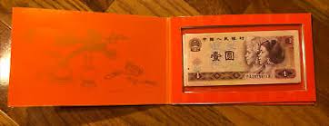 |
| eBay | China C18 Asia-Pacific Peace Conference Set of 4v - Mint NGAI (SL182) | eBay | 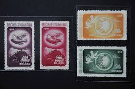 |
| chinesestamp.org | C018/JI18/纪18, Asian Pacific Peace Conference《庆祝亚洲及太平洋区域和平会议》 - Chinese Postage Stamps | China Postage Stamps | Chinese Stamp Album | China Philatel | ACPF | Stamps Catalogue of PRC | 中国邮票目录| |  |
| eBay | China-VR 192-95, Peace Conference for Asia | eBay | 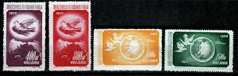 |
| eBay | PRC China Stamps: 1952 Peace Conference, SC167-70 MNH NGAI | eBay | 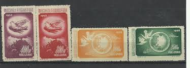 |
| NotesHOBBY | China Test note Chicken Rooster 2017 Commemorative Zhongchao – NotesHOBBY | 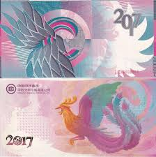 |
| eBay | PRC China1952 Peace Conference C18 Scott #167-170 block of 4 Sets Mint NH NGAI | eBay | 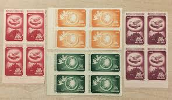 |
| eBay | China PRC Scott 167-170 1952 | eBay |  |
| eBay | China PRC Stamps Scott 167-170 1952 Peace Conference F/VF MNG full set A6282-821 | eBay | 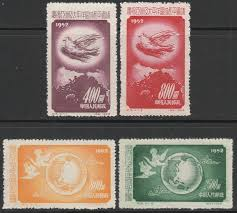 |
| eBay | China C18 Asia-Pacific Peace Conference Set of 4v - Used (SL183) | eBay | 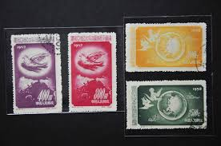 |
| eBay | Burundi Progressive Proof Set of 8 Notes Beautiful Rare 1968 PMG 63-66EPQ | eBay | 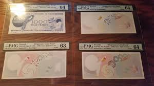 |
| Find Your Stamps Value | Peace Conference of the Asian and Pacific Regions: Doves and Globe - 庆祝亚洲及太平洋区域和平会议: 鸽子和地球$2500 Deep green stamp price, value | 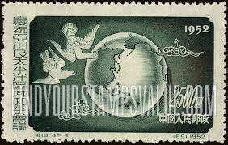 |
| eBay | China Scott # 167 - 170 - MH-NG - CV=$8.00 | eBay | 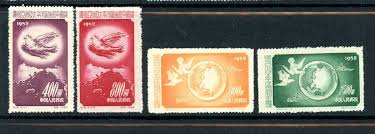 |
| eBay | CHINA PRC 1953 C24 WORLD PEACE, DOVE (Scott 187-189) VF MNH | eBay |  |
| eBay | PRC)1952 Sc 167/74 two sets MNG v1911 | eBay | 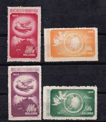 |
| NotesHOBBY | Bermuda 5 Dollars 2024 P 64 a Superb Gem UNC PMG 69 EPQ TOP POP – NotesHOBBY | 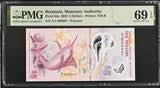 |
| eBay | AOP) China PRC #167-70 cto used. 1952 Peace Conference set of 4 | eBay | 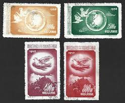 |
| eBay | China Year of the Dog Bank Note, Coin & Medal Set - COA & Envelope #Q2 | eBay | 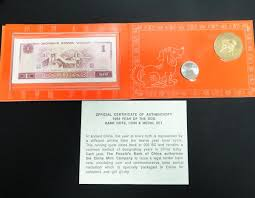 |
| eBay | Hong Kong 2025 80th Ann Victory Resistance against World Anti-Fascits stamp S/S | eBay | 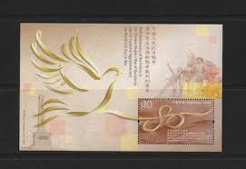 |
| eBay | Vintage 1996 Shenyang Mint Mouse Rat China Brass Medal with 1980 2 Yuan Banknote | eBay | 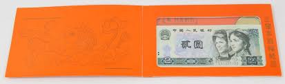 |
| eBay | 5 x Green Dragon Bonds (Uncirculated) Ships from USA | eBay | 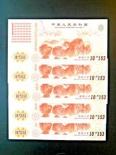 |
| eBay | Maldives 20 Rufiyaa 2015 Pick# 27 Superb Gem Uncirculated 69 PPQ | eBay | 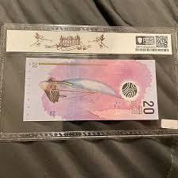 |
| eBay | Australia 1 Dollar No Date (1983) Pick #42d Uncirculated - Serial #DJZ 462697 | eBay | 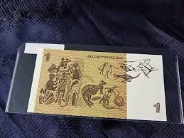 |
| eBay | 4x Phillips Wheeler BINARY $1 Notes BLU6646** Australia - Rare Serial Number | eBay | 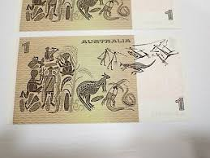 |
| eBay | China 1952 C18. Doves and Globe. Sc#167-70. MNH | eBay | 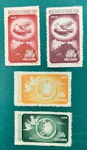 |
| eBay | People's Republic of China Scott #170 Mint No Gum As Issued | eBay | 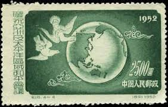 |
| eBay | Macau 2018 BOC and BNU Bills, UNC New , Dog Set , same last 4 numbers | eBay | 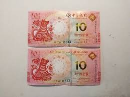 |
| NotesHOBBY | China Test note 3000 Chinese letter Precursor Pink Zhongchao engraving – NotesHOBBY | 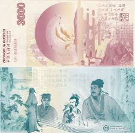 |
| eBay | BasicGrey ~ Bracket Album 6" x 6" 1-Ring Chipboard Album ~NIP Paper Craft | eBay | 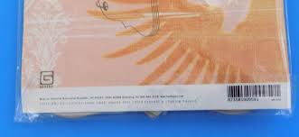 |
| eBay | 100 PC Vigintillion China Yellow Dragon bank Note Bonds UNcurrency 10^1203 | eBay | 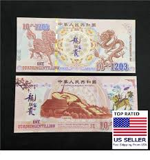 |
| Etsy | Buy Philippines 50 Piso Polymer Banknote: Marcos BBM, 2025 First Issue, Uncirculated Online in India - Etsy | 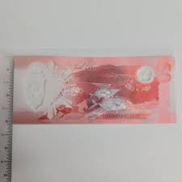 |
| eBay | 10PC Quadringintillion China Yellow Dragon Kirin bankNote Bonds currency 10^1203 | eBay | 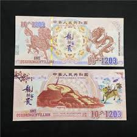 |
| eBay | 10 x Green Dragon Bonds (Uncirculated) USA SHIPPER!!!! | eBay | 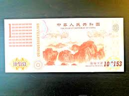 |
| eBay | China People's Rep. 'Comm' Year of The Rooster 2017 2g .999 Silver - Colorized | eBay | 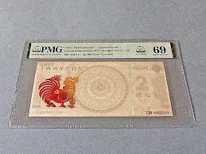 |
| eBay | PMG | eBay | 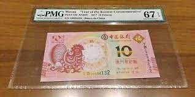 |
| eBay | Ryukyu Islands 74 (1959) 3c Egret and Rising Sun block of four never hinged | eBay | 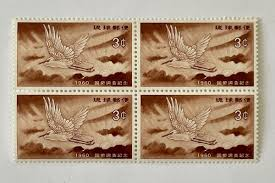 |
| eBay | China "Commemorative" year of the Dog 2019 Ag.999 3g PMG 70 Star | eBay | 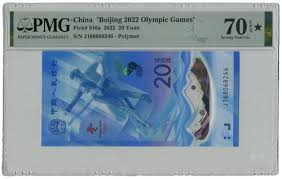 |
| eBay | China Stamps Real Shell Carving 2010 - Pearl River Style Charm | eBay | 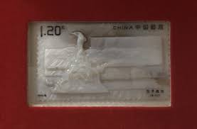 |
| eBay | China 1952 Peace Conf. of the Asian MNH F/VF (NGai) | eBay | 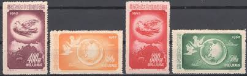 |
| Etsy | 2025 Philippines 50 Piso Polymer Banknote: Marcos BBM, UNC - Etsy Israel | 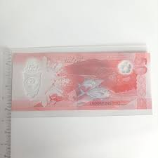 |
| eBay | Tonga, 2 Pa'anga 2023 2024, UNC, BUNDLE, Pack 100 PCS, Consecutive,P-NEW DESIGN | eBay | 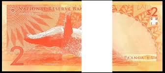 |
| eBay | China Set 2 UNC 20 Yuan Dragon + 100 Bai Fu 2024 Phoenix Test Note Polymer Comm | eBay | 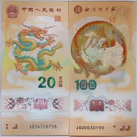 |
| eBay | Chinese 1 Vigintillion Dragon and Phoenix Yellow Commemorative Notes UNC New | eBay | 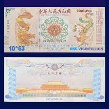 |
| eBay | Commemorative Banknote On The Auspicious Occasion Of His Majesty The Kings... | eBay | 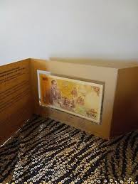 |
| Todocolección | este de china.-año 1952 num. 191 catalogo stamp - Buy Antique stamps of China on todocoleccion | |
| ICBC Nigeria | 100 million & 50000 yuan hell notes | |
| eBay | CHINA 20 YUAN 2025 Pick-921 POLYMER COMMEMORATIVE Year of the Snake Zodiac UNC | eBay | |
| eBay | China 1952 Sc # 167-70 MNH NGAI | eBay |